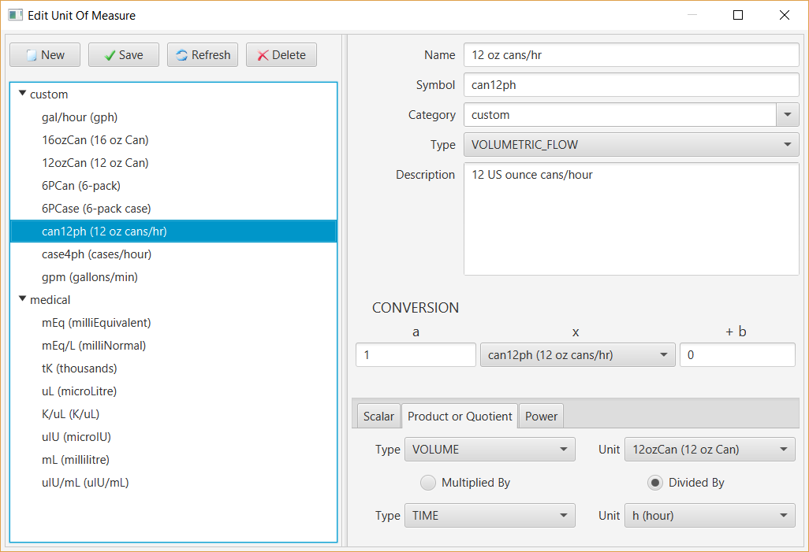
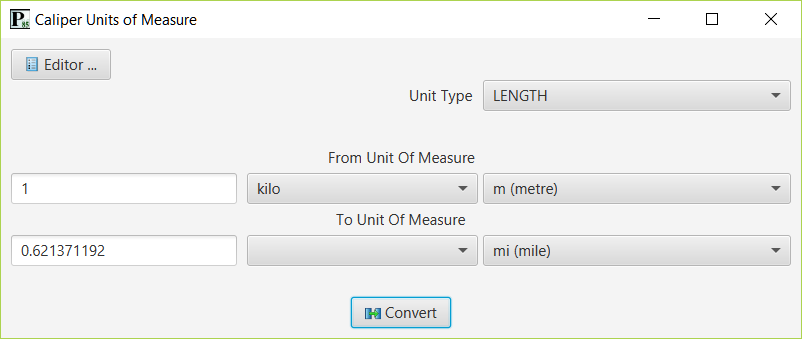

Application
A Unit of Measure converter and editor desktop application has been built in the Point 85 OEE application to demonstrate basic capabilities of the library. The user interface is implemented in JavaFX 17 and database persistency is provided by JPA (Java Persistence API) with FXML descriptors. Hibernate is the JPA implementation for a relational database.
The editor allows new units of measure to be created and saved to the database as well as updated and deleted. All of the units of measure pre-defined in the library are available for use in the editor or in the converter. The screen capture below shows the unit of measure editor.

To create a unit of measure, click the “New” button and follow these steps:
- Enter a name, symbol, category (or choose one already defined) and description.
- Choose the type from the drop-down. For custom units, choose “UNCLASSIFIED”. Only units of the same type can be converted.
- If the unit of measure is related to another unit of measure via a conversion, enter the scaling factor (a), abscissa (x) and offset (b). A prefix (e.g. kilo) may be chosen for the scaling factor. The conversion will default to the unit of measure itself.
- For a simple scalar unit, no additional properties are required.
- For a product or quotient unit of measure, the multiplier/multiplicand or dividend/divisor properties must be entered. First select the respective unit type (e.g. VOLUME) then the unit of measure. Click the respective radio button to indicate whether this is product or quotient.
- For a power unit, the base unit of measure and exponent must be entered. First select the unit type, then the base unit of measure. Enter the exponent.
- Click the “Save” button. The new unit of measure will appear in the tree view on the left under its category.
To edit a unit of measure, select it in the tree view. It’s properties will be displayed on the right. Change properties as required, then click the “Save” button.
To refresh the state of the unit of measure that is selected in the tree view from the database, click the “Refresh” button.
To delete a unit of measure, select it in the tree view then click the “Delete” button.
The screen capture below shows the unit of measure converter.

To convert a unit of measure follow these steps:
- Select the unit type in the drop-down, e.g. LENGTH.
- Enter the amount to convert from, e.g. 1
- Select the from prefix if desired. For example, “kilo” is 1000 of the units.
- Select the from unit of measure, e.g. “m (metre)” in the drop-down.
- Select the to prefix if desired.
- Select the to unit of measure, e.g. “mi (mile)” in the drop-down.
- Click the “Convert” button. The converted amount will be displayed below the from amount, e.g. 0.621371192.